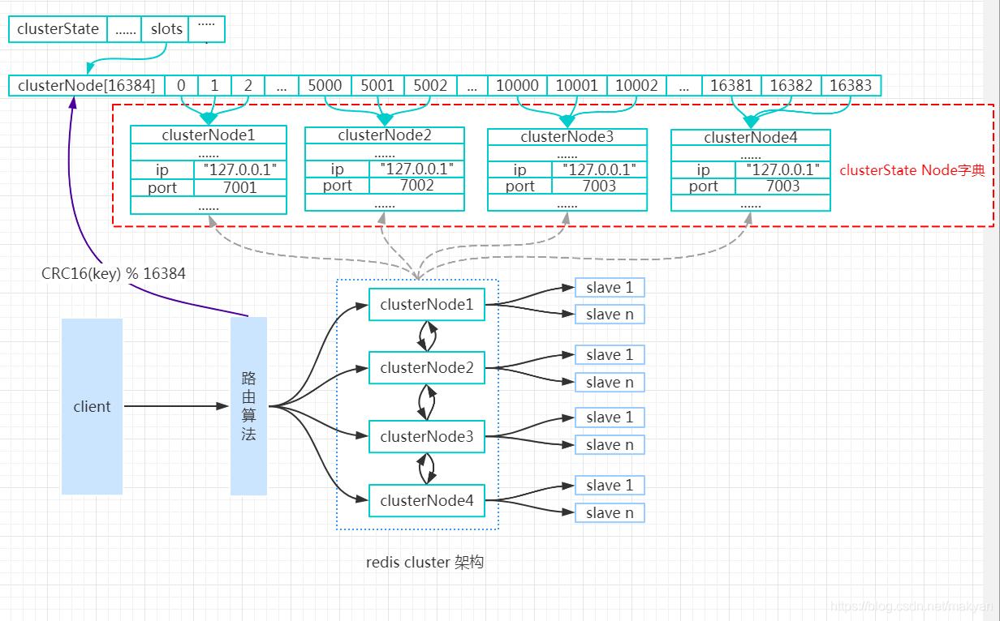
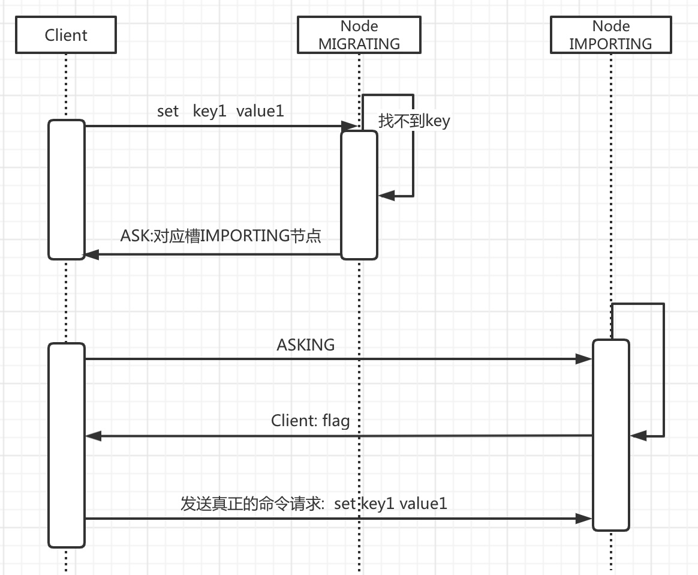

一、背景
主从复制需人工介入，不能自动化完成，即不能达到高可用
业务需要更高的QPS，而主从复制中单机的QPS可能无法满足业务需求
二、基本原理
1、基本架构
Redis Cluster中有多个节点，每个节点都负责进行数据读写操作，每个节点之间会进行通信。

结点状态信息结构
Cluster中的每个节点节点通过Gossip协议传播信息，都维护一份当前整个集群的状态，状态信息主要包括：
a. 当前集群状态
b. 集群中各节点所负责的slots信息，及其migrate状态
c. 集群中各节Gossip协议点的master-slave状态
d. 集群中各节点的存活状态及不可达投票
Gossip协议介绍
概念
gossip 协议（gossip protocol）又称 epidemic 协议（epidemic protocol），是基于流行病传播方式的节点或者进程之间信息交换的协议。
在分布式系统中被广泛使用，比如我们可以使用 gossip 协议来确保网络中所有节点的数据一样。
gossip protocol 最初是由施乐公司帕洛阿尔托研究中心（Palo Alto Research Center）的研究员艾伦·德默斯（Alan Demers）于1987年创造的。
执行过程
是由种子节点发起，当一个种子节点有状态需要更新到网络中的其他节点时，它会随机的选择周围几个节点散播消息，收到消息的节点也会重复该过程，直至最终网络中所有的节点都收到了消息。这个过程可能需要一定的时间，由于不能保证某个时刻所有节点都收到消息，但是理论上最终所有节点都会收到消息，因此它是一个最终一致性协议。
缺点
消息的延迟
由于 Gossip 协议中，节点只会随机向少数几个节点发送消息，消息最终是通过多个轮次的散播而到达全网的，因此使用 Gossip 协议会造成不可避免的消息延迟。不适合用在对实时性要求较高的场景下。
消息冗余
Gossip 协议规定，节点会定期随机选择周围节点发送消息，而收到消息的节点也会重复该步骤，因此就不可避免的存在消息重复发送给同一节点的情况，造成了消息的冗余，同时也增加了收到消息的节点的处理压力。而且，由于是定期发送，因此，即使收到了消息的节点还会反复收到重复消息，加重了消息的冗余。
拜占庭问题
即如果有一个恶意传播消息的节点，gossip协议的分布式系统就会出问题
2、数据分片
采用虚拟槽分区的方式。RedisCluster中有一个16384长度的槽，他们的编号为0、1、2、3……16382、16383。这个槽是一个虚拟的槽，并不是真正存在的。正常工作的时候，Redis Cluster中的每个Master节点都会负责一部分的槽，当有某个key被映射到某个Master负责的槽，那么这个Master负责为这个key提供服务，至于哪个Master节点负责哪个槽，这是可以由用户指定的，也可以在初始化的时候自动生成（redis-trib.rb脚本）。在Redis Cluster中，只有Master才拥有槽的所有权，如果是某个Master的slave，这个slave只负责槽的使用，但是没有所有权。具体步骤如下：
（1）把16384槽按照节点数量进行平均分配，由节点进行管理
（2）对每个key按照CRC16规则进行hash运算
（3）把hash结果对16383进行取余
（4）把余数发送给Redis节点
（5）节点接收到数据，验证是否在自己管理的槽编号的范围
如果在自己管理的槽编号范围内，则把数据保存到数据槽中，然后返回执行结果
如果在自己管理的槽编号范围外，则会把数据发送给正确的节点，由正确的节点来把数据保存在对应的槽中
3、节点的槽指派信息
clusterNode结构记录了节点负责处理那些槽：
struct clusterNode {
//…
unsignedchar slots[16384/8];
};
slots属性是一个二进制位数组(bit array)，数组的长度为16384/8=2048个字节，共包含16384个二进制位。
Master节点用bit来标识对于某个槽自己是否拥有。比如对于编号为1的槽，Master只要判断slots[1]是否为1，时间复杂度为O（1）。
4、集群所有槽的指派信息
将所有槽的指派信息保存在clusterState.slots数组里，若要检查槽i是否已被指派，只需访问clusterState.slots[i]的值即可，复杂度仅为O（1）。
5、请求重定向
由于每个节点只负责部分slot，并且slot也可能从一个节点迁移到另一节点，造成客户端有可能会向错误的节点发起请求。因此需要有一种机制来对其进行发现和修正，这就是请求重定向。有两种不同的重定向场景：
MOVED
a.客户端向Redis Cluster的任意节点发送命令，接收命令的节点会根据CRC16规则进行hash运算与16383取余，计算自己的槽和对应节点
b.若请求的key对应的槽不在自己的节点上，将查看自身内部所保存的哈希槽到节点ID的映射记录，则向客户端返回moved重定向异常。
c.客户端接收到节点返回的结果，如果是moved异常，则从moved异常中获取目标节点的信息
d.客户端向目标节点发送命令，获取命令执行结果
ASK
a.客户端向目标节点发送命令，目标节点中的槽已经迁移支别的节点上了，此时目标节点会返回ask转向给客户端
b.客户端向新的节点发送Asking命令给新的节点，然后再次向新节点发送命令
c.新节点执行命令，把命令执行结果返回给客户端
在对集群进行扩容和缩容时，需要对槽及槽中数据进行迁移，当客户端向某个节点发送命令，节点向客户端返回moved异常，告诉客户端数据对应的槽的节点信息。如果此时正在进行集群扩展或者缩空操作，当客户端向正确的节点发送命令时，槽及槽中数据已经被迁移到别的节点了，就会返回ask，这就是ask重定向机制。
6、数据迁移
当 槽X 从NodeA向NodeB迁移时，NodeA和NodeB都会有这个槽X，NodeA上槽X的状态设置为MIGRATING，NodeB上槽X的状态被设置为IMPORTING。

7、故障发现
Redis Cluster通过ping/pong消息实现故障发现，不需要sentinel
ping/pong不仅能传递节点与槽的对应消息，也能传递其他状态，比如：节点主从状态，节点故障等
分为主观下线和客观下线
主观下线
a.节点1定期发送ping消息给节点2
b.如果发送成功，代表节点2正常运行，节点2会响应PONG消息给节点1，节点1更新与节点2的最后通信时间
c.如果发送失败，则节点1与节点2之间的通信异常判断连接，在下一个定时任务周期时，仍然会与节点2发送ping消息
d.如果节点1发现与节点2最后通信时间超过node-timeout，则把节点2标识为pfail状态
客观下线
a.某个节点接收到其他节点发送的ping消息，如果接收到的ping消息中包含了其他pfail节点，这个节点会将主观下线的消息内容添加到自身的故障列表中，故障列表中包含了当前节点接收到的每一个节点对其他节点的状态信息
b.当前节点把主观下线的消息内容添加到自身的故障列表之后，会尝试对故障节点进行客观下线操作
8、故障转移
a.偏移量最大的从节点具备优先级成为主节点的条件
b.对选举出来的多个从节点进行投票，选出新的主节点
c.当前从节点变成主节点(slaveof no one)，执行cluster del slot撤销故障主节点负责的槽，并执行cluster add slot把这些槽分配给自己
d.向集群广播自己的pong消息，表明已经替换了故障从节点
三、RedisCluster的缺点
缺点：当节点数量很多时，性能不会很高
解决：使用智能客户端。智能客户端知道由哪个节点负责管理哪个槽，而且当节点与槽的映射关系发生改变时，客户端也会知道这个改变，这是一种非常高效的方式